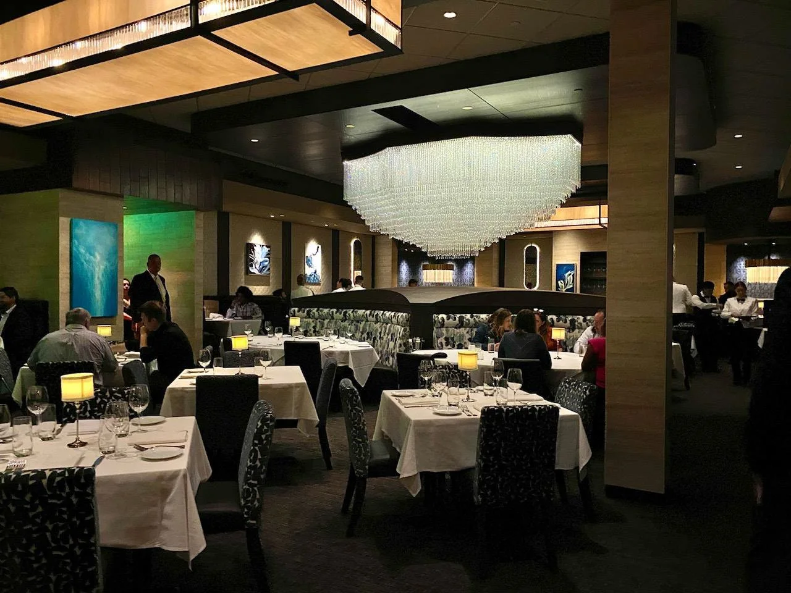

← ALL PROJECTSPreconstruction / Specialty Commercial
D-BAT Specialty Recreation
GMT materials document multi-location D-BAT preconstruction and construction planning, including landlord/tenant coordination, A/E coordination, trade budgeting, permitting strategy, and specialty-facility build-out planning.
THE WORK
Specific scope. Clear execution.
GMT materials document multi-location D-BAT preconstruction and construction planning, including landlord/tenant coordination, A/E coordination, trade budgeting, permitting strategy, and specialty-facility build-out planning.
Documented Scope
- Preconstruction and budget coordination
- A/E and design-team coordination
- Landlord / tenant scope separation
- MEP and utility planning
- Trade solicitation and procurement planning
- Permit and schedule coordination
EXECUTION PRIORITIES
EnvironmentSpecialty recreation / commercial
Delivery FocusComplex owner, design, vendor, and trade coordination
Program ValueRepeatable multi-location planning framework

Photography is representative of GMT project experience unless specifically identified.